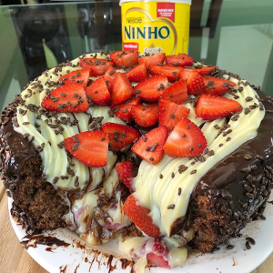

Recipe for Choclate pudding cake with strawberries

For the cake:
- 3 large eggs
- 1/2 cup demerara sugar or xylitol
- 1 cup whole milk or vegetable
- 1 cup oatmeal
- 1/4 cup cocoa powder
- 3 tablespoons melted butter
- 1 tablespoon baking powder
Method of preparation
- Beat the eggs with the sugar in the mixer or with a fouet (wire batter) for 3 minutes, add the butter and the milk and mix slowly,
finally add the dry ingredients (leaving the yeast last) by gently stirring not to lose the bake and stir again. Preheat the oven to 180 degrees,
pour this dough into a 20-cm-shape greased with butter and cocoa powder, bake from 25 to 30 minutes. After roasting, allow to cool
For the filling
- 2 leitecondfake's recipes
- 1 carton of sour cream
- 2 tablespoons butter
- 3 tablespoons powdered milk
- 1 bunch of large strawberries.
Method of preparation
- On low heat, stir fake condensed milk + butter + sour cream + powdered milk for about 10 minutes, allow to cool,
cut the strawberries in half and mix with this filling, set aside.
- With the already cold cake cut the top of it and remove the excess mass of the medium, add the filling and put the topinho again.To the ganache:
Melt 150 grams of chocolate in the microwave and mix with 50 ml of cream, pass in the cake and enjoy!